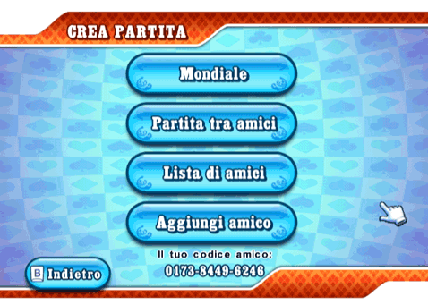

20 |
Gioca |
 |
In questa modalità potrai goderti una singola partita scegliendo l'opzione "Cash Game veloce", sfidare giocatori di tutto il mondo con l'opzione "Partita personaliz. " o creare una nuova partita con l'opzione "Crea partita". Cash Game veloce In questa modalità giocherai direttamente a un tavolo di Cash Game con piccoli e grandi bui in base al numero dei tuoi chip. Partecipando a una partita già in corso, il costo dell'ingresso sarà calcolato in base all'importo massimo che puoi permetterti. Partita personalizzata Accedendo al menu "Dettagli partita", è possibile impostare criteri di ricerca per trovare giocatori in ogni angolo del globo. Solo Cash Game veloce: A seconda della disponibilità dei tavoli da gioco, potrai partecipare a partite già in corso o accedere alla sala d'attesa prima che la partita inizi. Crea partita  In questa sezione del gioco potrai creare diverse partite in base ai tuoi gusti: potrai affrontare giocatori di tutto il mondo con la modalità "Mondiale", sfidare i tuoi amici con la modalità "Partita tra amici", accedere alla tua "Lista di amici" o aggiungere/rimuovere amici con la relativa opzione. Crea una partita con la modalità "Mondiale" Selezionando questa modalità, potrai sfidare giocatori in ogni angolo del globo. Tutti i giocatori possono invitare i loro amici a partecipare. Solo l'host però, ha l'opzione di riservare dei posti al tavolo di gioco e iniziare la partita. Crea una Partita tra amici Non c’è niente di male nel non voler sfidare avversari sconosciuti! Questo menu consente di creare o partecipare a partite esclusivamente con i propri amici. |
 |
 |
 |